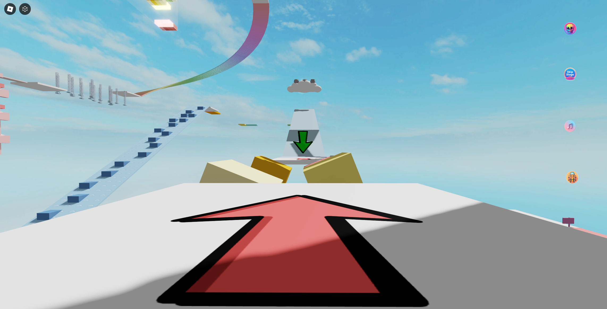

In February 2024, I released an obstacle course game (obby) called Chill But Not Too Chill Obby on the Roblox platform. For new Roblox developers, creating an obby as a first game seems to be a rite of passage. My journey was no different. What I thought would take only a week or two turned into a whole month-long adventure, with weekly updates along the way. My original draft was just a basic obby with routine obstacles. However, as I started working on the levels, I felt the urge to design unique and challenging obstacles. I wanted to create something I could be proud of, not just something that looked like the result of a homework exercise. Before diving into the game, I played more obbies on Roblox than I care to admit, trying to figure out what hooked players. I noticed a few things that these games had in common: an open-air environment, easy transitions from one level to the next, and simple object models. I decided to incorporate and expand on these elements in my game to give players a sense of familiarity.

I spent $100 on advertising after publishing the game, which resulted in over 1,000 players the following day, with many more in the coming weeks. Unfortunately, I immediately noticed one major issue when playing alongside these new players: the game’s difficulty was on Nightmare mode! One player even quipped that the game should be called Rage Quit Obby. There were a few levels where players were quitting immediately, with most leaving as early as level 3. Two of the most important factors to consider for your game are player retention and player engagement. Good engagement for obbies is typically around 10 -20 minutes of session time. With players leaving at level 3, the average session time for my game was as low as 3 minutes! The problem with level 3 was that the obstacles transitioned from their starting position to their ending position way too quickly. This caused many players to get crushed by the obstacles, leading them to quit the game before respawning. To make the level easier, I adjusted the transition time between the start and end positions:
local collection_service = game:GetService("CollectionService")
local AIR_POSITION = 16
local GROUND_POSITION = 0
for _, part in collection_service:GetTagged("BlockPart") do
task.spawn(function()
local prismatic_constraint = part:WaitForChild("StartPosition"):WaitForChild("PrismaticConstraint")
local wait_time = math.random(300, 500) / 100
-- changed from 50, 150 to 100, 300 to 200, 300 to 300, 500 --
while true do
task.wait(wait_time)
prismatic_constraint.TargetPosition = AIR_POSITION
task.wait(wait_time)
prismatic_constraint.TargetPosition = GROUND_POSITION
end
end)
end
While this did make the level easier, it didn’t make it any less of a slog. It wasn’t until much later, when I was modifying another level, that I realized the fix for level 3 was to make the blocks smaller so they could be jumped over. The key level design element I discovered here is that players should not have to wait for obstacles to progress through the level. Level 13 was another challenging level for players. When I tested it myself, it was passable on the first try. However, it’s easy to detach yourself from the player perspective when you become the level designer, and that’s what happened here. Even though the level was quite easy for me, it certainly wasn’t easy for the Roblox players. The change here was to remove half of the fireballs from each truss and to slow down their angular velocity just a bit. Level 20 appears to be easy, but I found that players couldn’t time the jump between stars correctly. This level has been tweaked so many times that I think it’s just not suitable for multiplayer gameplay, where player or server lag can cause issues. While these three levels gave players headaches and will probably need continuous tweaks until the balance is right, there were other levels that players seemed to enjoy or find challenging in a good way.